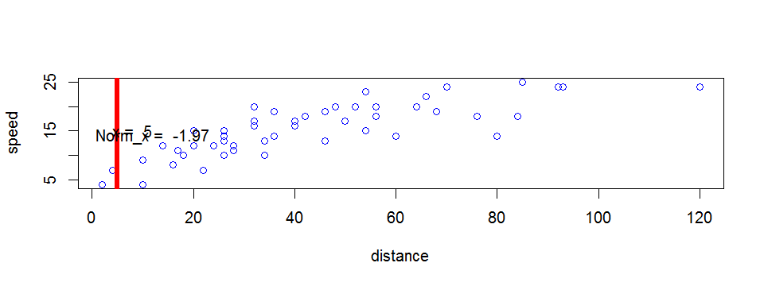

- Maybe you need a normalized distance value to compare between different coordinate systems.
- The easy refference red vertical line makes it easy to find your original distance value and the related speed.
Scot Shields
plot(cars$dist,cars$speed,xlab='distance',ylab='speed',col='blue')
x <- input$x
lines(c(x, x), c(0, 200),col="red",lwd=5)
norm <- (x-mean(cars$speed))/sd(cars$speed)
text(8, 15, paste("x = ", x))
text(12, 14, paste("Norm_x = ", round(norm, 2)))
